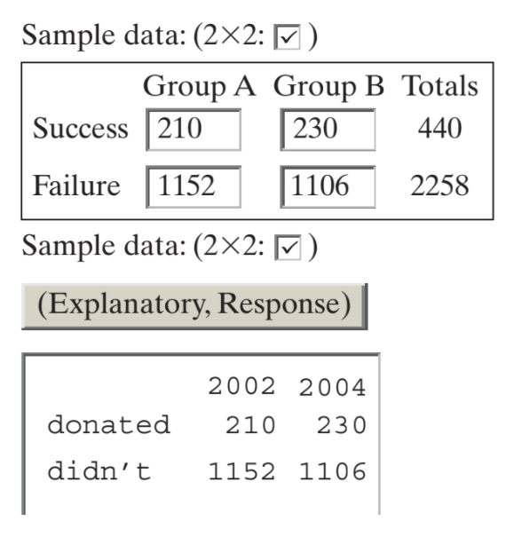

Section6.3Comparing two proportions: Theory-based approach
SubsectionDonating blood
Blood donations from volunteers serve a crucial role in the nation’s health care system. Are Americans any more or less generous about donating blood in some years than others? Are women any more or less willing to give blood than men? To investigate these questions we can analyze data from the General Social Survey 1 , which is a national survey conducted every two years on a nationwide random sample of adult Americans.
Exercise6.3.1.
Did this study make use of random sampling, random assignment, both, or neither? Also explain what your answer means in terms of the scope of conclusions that can be drawn from these data.
Let’s start by comparing the years 2002 and 2004.
Exercise6.3.2.
State the appropriate null and alternative hypotheses, in words and in symbols, to address the research question of whether Americans were more generous with blood donations in one of these years than the other. (Hint: Remember that hypotheses are always about population parameters, and think about whether the alternative should be one- or two-sided before you see the data.)
Data from the 2002 and 2004 surveys are summarized in this two-way table:
Table6.3.1.
2002
2004
Donated blood in past year
210
230
Have not donated blood in past year
1,152
1,106
Total
1,362
1,336
Exercise6.3.3.
For each year, calculate the (conditional) proportion of adult Americans sampled who donated blood in the previous 12 months. Use appropriate symbols to represent them. Also calculate the difference between these sample proportions (taking the 2002 proportion minus the 2004 proportion).
Exercise6.3.4.
Produce a segmented bar graph or mosaic plot to display the conditional proportions who gave blood in these two years. Comment on what the graph and your calculations from question 3 reveal about these two samples.
Exercise6.3.5.
Use the Multiple Proportions applet 2 to conduct a simulation analysis to approximate a p-value for testing the hypotheses that you stated in question 2. You can enter the table of counts in the \(2\times 2\) table or type in the table in the Sample data box and press Use Table. Or you can copy the data from the text webpage and paste into the Sample data box and press Use Data. Verify the segmented bar graph that you created.

Key Idea6.3.2.
Shuffling is an appropriate way to estimate a p-value for comparing groups regardless of the study design (observational study or experiment, random assignment or random sampling or neither). Of course, the study design is very important in determining the appropriate scope of conclusions. (Can you generalize to a larger population? Can you infer a cause-and-effect conclusion?)
Exercise6.3.6.
Check the Show Shuffle Options box, ask for 1000 repetitions, and press Shuffle.
(a)
Indicate how to find the p-value from the null distribution. (Hint: Remember whether the alternative hypothesis is one-sided or two-sided.)
(b)
Report the approximate p-value.
(c)
Based on this p-value, do the sample data provide much evidence that the population proportion who gave blood in 2002 differs from the population proportion who gave blood in 2004?
Exercise6.3.7.
Does the null distribution of the simulated values appear to follow an approximately normal distribution? Centered around what value? Also report the standard deviation of these values.
Exercise6.3.8.
Let’s see what the standardized statistic tells us.
(a)
Report the observed value in the sample for the statistic.
(b)
How many standard deviations (based on your answer to question 7) above or below zero (the hypothesized value) is the observed value of the statistic?
(c)
Is the strength of evidence against the null hypothesis based on this standardized statistic consistent with what the p-value revealed in question 6? Explain.
Just as you learned a theory-based approach for making inferences about a single proportion, so too will you now learn a theory-based approach for making inferences about comparing proportions between two groups. This theory-based approach is again based on an approximation from a normal distribution.
Exercise6.3.9.
Check the Overlay Normal distribution box. Is the behavior of the two distributions similar? How do the p-values compare?
Exercise6.3.10.
Check the box to compute 95% CI(s) for difference in proportions. (This box appears in the left-hand panel when the difference is selected as the statistic.)
(a)
Report the endpoints of this interval.
(b)
Interpret this interval. Be sure to mention clearly what parameter is being estimated by this interval. (Hint: In other words, you are 95% confident that this interval contains what?)
(c)
Does this interval contain only negative values, only positive values, or does the interval include the value zero as well as both positive and negative values? Comment on the importance of what this means.
Exercise6.3.11.
Another applet that can compute p-values and confidence intervals for tests of two proportions is the Theory-Based Inference applet 3 . Use the pull-down menu to select Two proportions and enter the relevant summary information, using the 2002 sample as Group 1. Check the Test of Significance box and press on the inequality sign button until the alternative hypothesis becomes two-sided. Press Calculate. Verify the p-value you obtained earlier (question 9) as well as the confidence interval (question 10).
SubsectionValidity Conditions for Theory-Based Approach (Two Proportions)
As with a single proportion, the theory-based inference approach for comparing two proportions is only valid when a normal distribution provides a good approximation to the distribution of the statistic \(\hat{p}_1 - \hat{p}_2 \text{.}\) Conservatively, the theory-based significance test and confidence interval work well when there are at least 10 observations in each of the four cells of the two-way table. In other words, we require at least 10 "successes" and at least 10 "failures" in each sample in order to use this theory-based approach.
Validity Conditions6.3.3.
The theory-based test and interval for the difference in two proportions (called a two-sample z-test or interval) work well when there are at least 10 observations in each of the four cells of the \(2\times 2\) table.
Exercise6.3.12.
Is it valid to use the theory-based approach for two proportions in this study? Justify your answer.
Exercise6.3.13.
Is it reasonable to generalize your conclusions from this analysis to the population of all adult Americans? Explain why or why not.
SubsectionExploring further
Exercise6.3.14.
Let’s see what will happen if we switch which is Group 1 and which is Group 2.
(a)
Before doing any calculations, what do you think would happen to the standardized statistic, p-value, and confidence interval if you entered the 2004 sample as Group 1 and the 2002 sample as Group 2?
(b)
Make this change in the Theory-Based Inference applet (i.e., switch the roles of Groups 1 and 2), and then press Calculate. Report the new values of the standardized statistic, p-value, and confidence interval.
(c)
Did these change as you predicted in part (a)?
Using the General Social Survey data to classify respondents by sex and combining the years 2002 and 2004 we can construct a two-way table:
Table6.3.4.
Male
Female
Donated blood in past year
239
201
Have not donated blood in past year
1,032
1,226
Total
1,271
1,427
Exercise6.3.15.
Analyze these data to address the question of whether American men and women differ with regard to donating blood.
(a)
Are the validity conditions met?
(b)
State the null and alternative hypothesis using full sentences. (Do males - females)
(c)
Calculate the proportion of male blood donors and female blood donors.
(d)
Create a chart that compares these two proportions.
(e)
Calculate the standardized statistic and the p-value.
(f)
Make a conclusion regarding your null and alternative hypothesis in light of the p-value you calculated.
(g)
Calculate a 95% confidence interval for the difference between the proportion of each gender who donate blood.
(h)
Interpret your confidence interval, giving all necessary context.